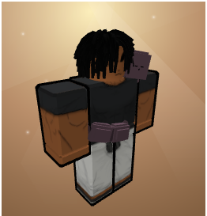

Favorite Jujutsu Shenanigans Characters

Bio
This is my Roblox avatar. I have over 100 hours in this roblox game called "Jujutsu Shenanigans". It's basically an arcade
free for all fighting game with 20 players per server. I tend to just play this game when I'm bored
What's my playstyle?
Most people in this game, like to respect 1v1s, but I tend to try to be the most annoying person in the server until everyone targets me.
So I tend to gravitate towards long-range characters with a lot of mobility and AOE attacks.
How I get started when I load into a server.
I try to look for people who are just hanging around doing emotes, I'll first throw a few attacks and then run away.
Usually one of them or the whole group gets irritated enough to just start chasing me. Then what I'll do is lead them to another
group of people, so they accidentally attack them. This sometimes causes a huge brawl and it's pretty fun to watch.
Top 5 Annoying Abilities
- Boogie Woogie
- The user can switch positions with another player. The user can also just make it a normal clap to fake out the other player.
- Helping Hand
- Commands your sword to follow a player anywhere around the map, the user can make the sword attack the player, even without looking at them or being around them.
- Clairvoyance
- Marks the player and forces them to waste their dash in any direction of the user's choosing, sometimes forcing them to take an attack.
- Garuda Rebound
- The user kicks at the player, it then bounces off them and then a second kick at the player launches them towards the user. This skill has auto-aim.
- Rabbit Escape
- Sends a flurry of rabbits towards a player, it's long-range and has auto-aim.
Links to the Characters who use these Abilities
- Boogie Woogie User
- Helping Hand User
- Clairvoyance User
- Garuda Rebound User
- Rabbit Escape User